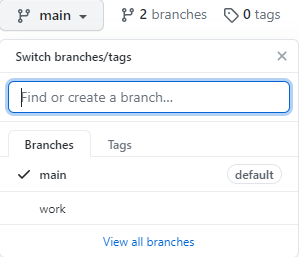

Build github page with Hugo
2021-02-02
시작하기 전에
github 페이지 는 github.io 주소로 블로그 및 홈페이지를 만들 수 있도록 제공하고 있다.
아래와 같은 정적 사이트 생성기(Static Site Generator)와 각각의 테마를 잘 활용하면 원하는 화면 구성으로 블로그를 쉽게(?) 구축 할 수 있다.
github 페이지에서 Jekyll을 소개하고, 많이 사용되면서 테마도 많이 있다고 하지만, 여기서는 Hugo를 사용한 방법을 정리하도록 한다.
Hugo를 사용한 이유는
- Go 언어로 작성되어 있다고 하고, (크게 의미는 없다.)
- 가볍고 빠르다고 하며,
- Jeykll은 Ruby를 사용해야 하고, 별도 설치를 해야 한다는 점에서
Hugo가 더 끌렸던 것 같다.
Hugo
정적 사이트 생성이라는 이름에서 알 수 있듯이 미리 작성된 페이지와 레이아웃을
를 통해 빌드하게 되면 익숙한 html 형태의 웹페이지를 생성하게 된다.
여러 가이드 등을 확인하면 페이지 작성을 위한 repository와 publish를 위한 repository 두 개가 필요하다.
여기서는 추가 repository 대신 하나의 repository에서 branch를 나눠서 사용하는 방법을 정리한다.
(최근에는 Github Action을 통해 publish를 바로 할 수 있다고도 한다.)
우선 시작하기 hugo가 설치되어 있어야 하므로 아래 페이지에서 적당한 버전을 받아서 환경 변수 등록해둔다.
시작
github 페이지는 아래와 같이 미리 정해진 repository 이름으로 서비스 된다.
{userid}.github.io
위와 같이 repository를 만들었다면 아래와 같이 글 작성을 위한 브랜치를 하나 추가한다.

그럼 이제 작업을 위한 로컬 저장소를 준비한다.
~/github/hyunh.github.io.work$ git remote add origin https://github.com/hyunh/hyunh.github.io.git
~/github/hyunh.github.io.work$ git fetch origin
여기 까지 하면 아래와 같이 Remote 브랜치를 가져오게 되고,
origin/main
origin/work
필요한 것은 work 브랜치이기 때문에, work로 체크아웃 해준다.
~/github/hyunh.github.io.work$ git branch -a
* work
origin/main
origin/work
Hugo new site
저장 공간도 준비해두었으니 Hugo로 새로운 사이트를 만들 차례이다.
위 가이드와 같이 명령어를 입력하면, 이미 저장 공간을 만들어 놨기 때문에 에러가 발생하니,
Error: /home/hyunh/github/test/hyunh.github.io.work already exists and is not empty. See --force.
–force 옵션도 포함하여 입력하면 성공적으로 사이트를 생성 할 수 있다.
Build
위에서 만든 사이트는 사이트를 위한 설정 값, 레이아웃 등을 모아놓은 데이터일 뿐이고, 실제 웹사이트로 만들기 위해서는 빌드를 해야한다.
hugo 명령어를 통해 빌드가 완료되면 public 디렉토리 안에 빌드된 내용이 생성된다.
public 디렉토리 안에 내용을 처음에 만들어 놓은 main 브랜치로 푸시하면 아래 주소로 우리가 만든 페이지를 접속 할 수 있게 된다.
- hyunh.github.io
푸시 전에 미리 결과물을 확인하고 싶다면 아래와 같이 입력하면 로컬 호스트(127.0.0.1:1313)로 접속하여 결과물을 확인 할 수 있다.